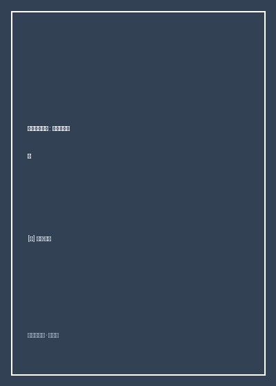

《在中国大地上》

总体观点
《在中国大地上》是西方非虚构文学中观察20世纪80年代中国最真实生动的社会学切片。保罗·索鲁拒绝外宾式的空调专车接待与走马观花，他执着地将自己扔进挤满民工、倒爷、知青与扁担货物的硬座绿皮车厢，以最粗糙但也最诚实的肉身触感记录了古老东方大国在巨变前夜的喘息。
作者展现了高超的速写功力与人类学家的毒舌幽默。从大同蒸汽机车的漫天煤灰、上海硬座车厢里的瓜子壳与铝制热水瓶，到广州倒爷们手中的电子表与蛤蟆镜，书中充斥着令人捧腹的文化误会，却在字里行间深刻记录了中国人压抑数十年后对财富、外部世界与美好生活的狂热渴望。
全书以长途漫游见证了中国大地的多样性与韧性。从零下三十度的哈尔滨林海雪原，到黄沙遮天的新疆戈壁，再到搭乘颠簸卡车穿越青藏高原，索鲁在抱怨与疲惫中最终被中国普通劳动者吃苦耐劳、充满幽默感的强韧生命力深深折服。
核心观点
-
1. 绿皮火车作为微型中国社会：硬座车厢里的众生相
在封闭缓慢的铁皮车厢里，阶层壁垒被打破，热水瓶、搪瓷茶缸、扑克牌与剥花生壳的声音构成了最真实的平民社交大熔炉。
互不相识的乘客在狭窄的三人座上挤成沙丁鱼罐头，几分钟后就开始分享自家的煮鸡蛋和大葱蘸酱，聊得热火朝天。 -
2. 煤烟时代的工业巨兽：大同蒸汽机车的最后绝响
西方已经进入内燃机与电气化时代，而当时的中国铁路依然依赖黑烟滚滚、轰鸣震耳的前进型蒸汽机车拉动国民经济的骨骼。
走访大同机车车辆厂，数百名年轻工人光着膀子在火星飞溅中锻打巨大钢铁连杆，展现出浓郁纯正的19世纪狄更斯式工业气魄。 -
3. 沿海与内地的时空温差：广州倒爷与西北边陲的巨大反差
南方沿海在特区春风下倒买倒卖狂热萌动，人人都想发财；而西北内陆与青藏高原依然停留在原始缓慢的历史时钟里。
在开往广州的列车上挤满了操着温州方言、提着装满尼龙袜皮带大旅行袋的年轻倒爷，人人眼神里闪烁着饥渴的冒险光芒。 -
4. 对外部世界的无限好奇：英语狂热背后的时代饥渴
作为火车上罕见的外国老头，索鲁在沿途每一个小车站都会被好奇的学生团团围住练习英语，展现出破茧而出的时代渴望。
在洛阳火车站长椅上，几名戴着厚眼镜的高中生小心翼翼凑上前，掏出皱巴巴的英语广播教材向索鲁请教动词发音。 -
5. 中国人的生存耐受力：在最艰难的旅途中苦中作乐
即便晚点十二小时、没有座位只能蜷缩在肮脏洗手间门旁，中国老百姓依然能从口袋里摸出一把葵花籽，微笑着谈论收成与未来。
暴雪封堵青藏线公路，卡车司机在驾驶室点起汽油炉取暖，一边给索鲁分发热馒头，一边唱着秦腔笑对风雪。
全书思维导图 · 知识脉络树
全书结构
-
第一站 铁轨上的巨兽：从伦敦到北京的跨欧亚专列
搭乘东方快车穿越苏联西伯利亚大铁路，在二连浩特经历漫长的吊起车厢更换宽轨转向架仪式，正式踏入中国大门。
记录在冰天雪地的边境小站，中方乘务员熟练换上厚棉袄、提着煤铁铲为车厢生起取暖小煤炉的生动开篇。 -
第二站 北方煤尘：大同蒸汽机车制造厂与云冈石窟的黑烟
走访晋北重工业基地大同与内蒙古草原，记录漫天弥漫的煤灰粉尘、露天煤矿与古老石窟大佛之间的魔幻并置。
大佛鼻尖落满黑色煤烟，旁边运煤重载列车昼夜不停发出汽笛长鸣，形成传统信仰与社会主义工业化的剧烈冲撞。 -
第三站 运河与江南：在硬座车厢的瓜子壳与热水瓶中看上海
沿京沪线南下，穿行于无锡、苏州与上海老弄堂之间，细致描摹江南水乡的自行车洪流、早点摊油条香与市井嘈杂。
在南京路外滩目睹数万名骑着凤凰自行车的市民在清晨铃铛声中浩荡前行，赞叹这是世界上最宏伟的人力流动奇观。 -
第四站 南方淘金潮：挤满无座知青与倒爷的广州慢车
深入南下列车，见证特区经济对全国年轻人口的巨大虹吸效应，记录清平市场上的奇异山珍野味与商业社会的野蛮生长。
在广州拥挤的自由市场目睹小贩麻利宰杀蛇类与穿山甲，外贸服装店震耳欲聋播放着邓丽君磁带的狂飙现场。 -
第五站 世界屋脊：颠簸开往格尔木与拉萨的高原卡车与铁轨
经由陇海线西进，转乘颠簸的大东风卡车翻越唐古拉山口进入西藏，记录布达拉宫前磕长头的信徒与高反下的生死考验。
在海拔五千米高原遭遇严重缺氧头痛，藏族阿妈默默递上一碗热酥油茶和一块干酪，温热从喉咙流遍全身。 -
第六站 丝路风沙：在吐鲁番与喀什的葡萄架下告别中国
漫游河西走廊，深入新疆沙漠绿洲，在哈密瓜香气与喀什高台民居的土墙中结束长达一年的中国铁路壮游。
索鲁在列车驶离国境前在笔记本写下深情告别：'中国是一部永远翻不完的厚重巨书，她古老、倔强、嘈杂，却永远生生不息'。